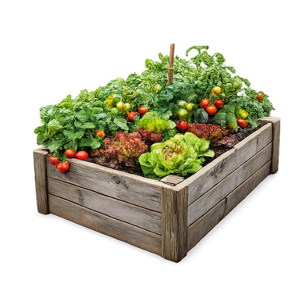
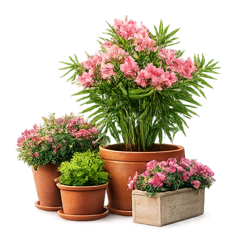
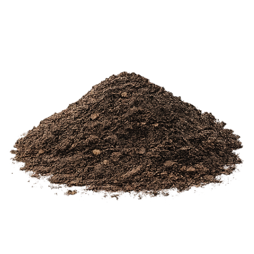
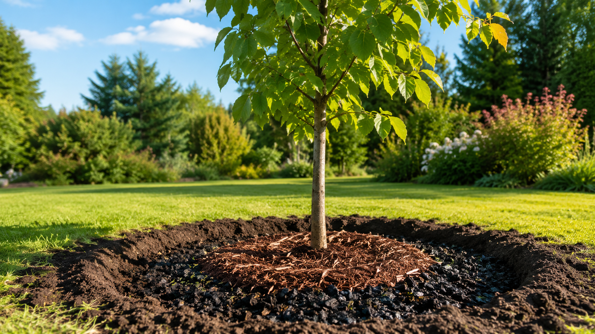

bis zu5 L
Wasserspeicher je kg Pflanzenkohle
1 kg aktivierte Pflanzenkohle speichert bis zu 5 l Wasser. Unsere Aktivprodukte enthalten bis zu 20 % Pflanzenkohle – weniger Gießen, mehr Wirkung in Trockenphasen.
Carbon4Future · Made in Germany
Aktivierte Pflanzenkohle für gesunde Pflanzen, lebendige Böden und nachhaltiges Wachstum – in Gärten, auf Balkonen und in der Stadt. Ganz ohne Chemie und Torf.
// Pflanzenkohle
Ob Neuanpflanzung, Hochbeet oder Kübel auf dem Balkon: Mit aktivierter Pflanzenkohle legen Sie den Grundstein für einen Boden, der Wasser und Nährstoffe dauerhaft hält. Gerade in Zeiten von Klimawandel und Extremwetter wächst alles, was Sie neu pflanzen, von Anfang an kräftiger.
Carbon4Future (C4F) macht diese Kraft nutzbar – mit fertig aktivierten Boden-Produkten, regional hergestellt in Deutschland. Das ist keine normale Pflanzenkohle, sondern angereicherte: vorab aufgeladen mit Nährstoffen, Kompoststoffen und effektiven Mikroorganismen.
1 kg aktivierte Pflanzenkohle speichert bis zu 5 l Wasser. Unsere Aktivprodukte enthalten bis zu 20 % Pflanzenkohle – weniger Gießen, mehr Wirkung in Trockenphasen.
1 kg regional erzeugte Pflanzenkohle bindet bis zu 2,5 kg CO₂ – ohne grundwasserbelastende Trägerstoffe und ohne lange Lieferketten.
Neben der Bio-Pflanzenkohle setzen wir hochwertige Kompoststoffe, organische Pflanzenbestandteile und effektive Mikroorganismen ein. Keinerlei chemische Zusätze.
Nährstoffe werden gezielt langsam abgegeben. Düngen Sie nach, wird der Dünger wieder im Langzeitspeicher gebunden – statt ausgewaschen zu werden.
Wir laden die Pflanzenkohle bei Carbon4Future mit Nährstoffen, Kompoststoffen und effektiven Mikroorganismen auf – fertig aktiviert und sofort einsatzbereit.
Sie mischen das Aktivprodukt einfach unter Erde oder Substrat – bei der Neuanpflanzung, im Hochbeet oder im Kübel. Einmalig, der Effekt bleibt.
Die poröse Kohle hält Wasser und gibt Nährstoffe gezielt langsam ab. Nachgedüngtes wird erneut im Langzeitspeicher gebunden – nicht ausgewaschen.
// Produkte
Jedes unserer Aktivprodukte ist bereits ein vollständiges Bodensystem – aktivierte Pflanzenkohle, organische Nährstoffe und Mikroorganismen in einem. Hergestellt in Deutschland, plastikfrei verpackt, ohne chemische Zusätze.

Für üppiges Wachstum im Hochbeet – ideal für Starkzehrer wie Tomaten und Zucchini.
Anfragen →
Ausgewogene Grundversorgung für eine gesunde Ernte – Bodenpflege und Nährstoffe in einem.
Anfragen →Gut zusammen für Beete mit hohem Bedarf.
Schnelles Wachstum, hohe Erträge und eine natürliche Nährstoffauffrischung – aufeinander abgestimmt.
Beraten lassen →
Kompakt und geruchsarm für Töpfe und Balkonkästen – die komplette Lösung für kleine Flächen.
Anfragen →
Hochwertige, torffreie Trägererde für alle Gartenanwendungen – mit langfristiger Wirkung.
Anfragen →Kleiner Raum, große Ernte.
Ideal für Töpfe und Kästen – einfach in der Anwendung, dauerhaft im Effekt.
Beraten lassen →
Konzentrat für fruchtbare Schwarzerde: dauerhafter Humusaufbau, CO₂-Bindung und aktives Bodenleben.
Anfragen →
Gezielter Wasserspeicher im Wurzelbereich – starke Wurzeln, sicherer Anwuchs bei Neuanpflanzungen.
Anfragen →Langzeitkraft für starke Bäume.
Tiefenwirksame Nährstoffe und langfristige Bodenverbesserung – weniger Pflege, sicherer Anwuchs.
Beraten lassen →Unser Online-Shop ist in Vorbereitung. Bis dahin beraten wir Sie gerne persönlich zu Gebindegrößen, Mengen und Kombinationen.
Produkt anfragen →// Strategie für Ihren Boden
Sie müssen nicht alles auf einmal einsetzen. Kombinieren Sie die Produkte je nach Fläche und Ziel – die passende Richtung zeigen wir Ihnen gern. Berechnen Sie hier, wie viel Wasser Ihr Boden zusätzlich speichern und wie viel CO₂ er binden kann.
Planungswert auf Basis: 1 kg aktivierte Pflanzenkohle speichert bis zu 5 l Wasser und bindet bis zu 2,5 kg CO₂. Tatsächliche Werte hängen von Boden, Anwendung und Produkt ab.
// Anwendungsbereiche
Sie sind unser Partner – ob im Handel, im GaLaBau, in der Erden- und Humuswirtschaft oder als engagierter Gärtner. Es gibt drei Wege, mitzumachen.
Nehmen Sie unsere Aktivprodukte ins Sortiment – mit einer starken, erklärbaren Story: torffrei, regional, CO₂-bindend. Für Gartencenter, Baumärkte, Raiffeisen- und Lebensmittelhandel.
Vertriebspartner werden →GaLaBau-Betriebe sowie Erden- und Humuswerke stellen mit unserer aktivierten Pflanzenkohle ihre eigene Schwarzerde her – zunehmend gefragt bei Kommunen, die Pflanzenkohle-Produkte ausschreiben.
Die Idee stammt vom „Terra Preta“ des Amazonas: Indigene Völker schufen vor Jahrtausenden mit Holzkohle und organischen Resten die fruchtbarsten Böden der Welt. Terra Preta erhalten Sie fertig bei uns – selbst gemacht entsteht Schwarzerde.
Beratung anfragen →
// Mitmach-Aktion
Werden Sie aktiv gegen den Klimawandel: Pflanzen Sie mit uns 100 Bäume – mit aktivierter Pflanzenkohle im Wurzelraum für sicheren Anwuchs und langfristig gespeichertes CO₂.
Bei der Aktion mitmachen →// Kontakt
Erzählen Sie uns kurz von Ihrer Fläche oder Ihrem Vorhaben – wir melden uns mit einer passenden Empfehlung.